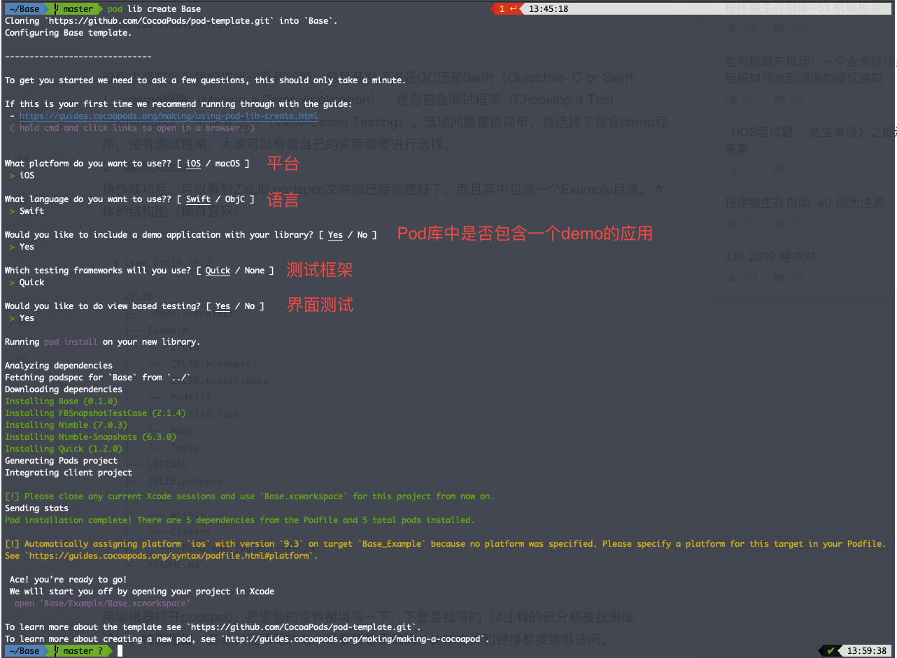
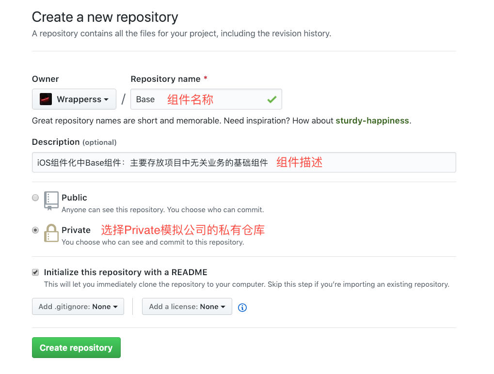
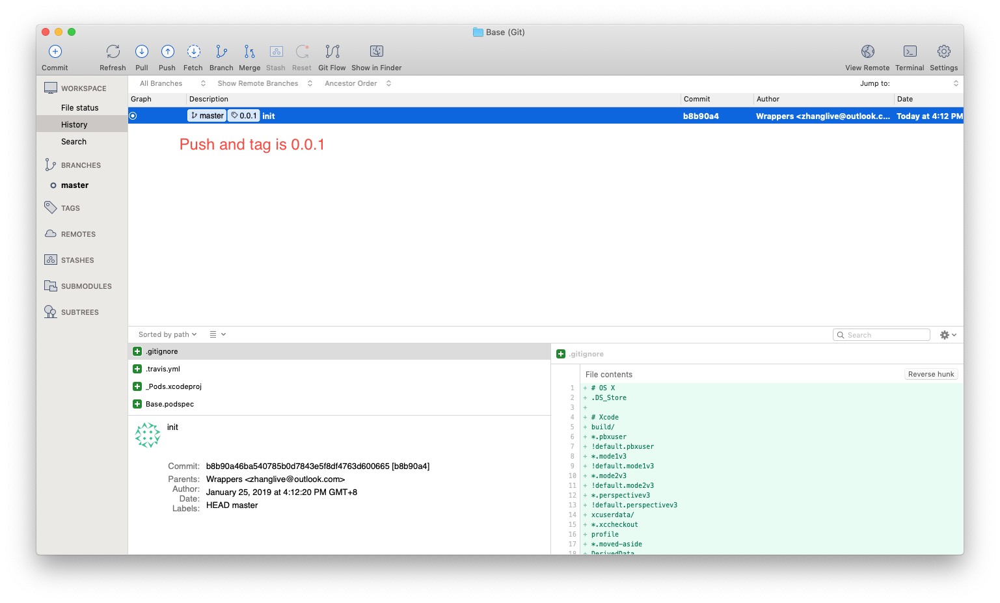
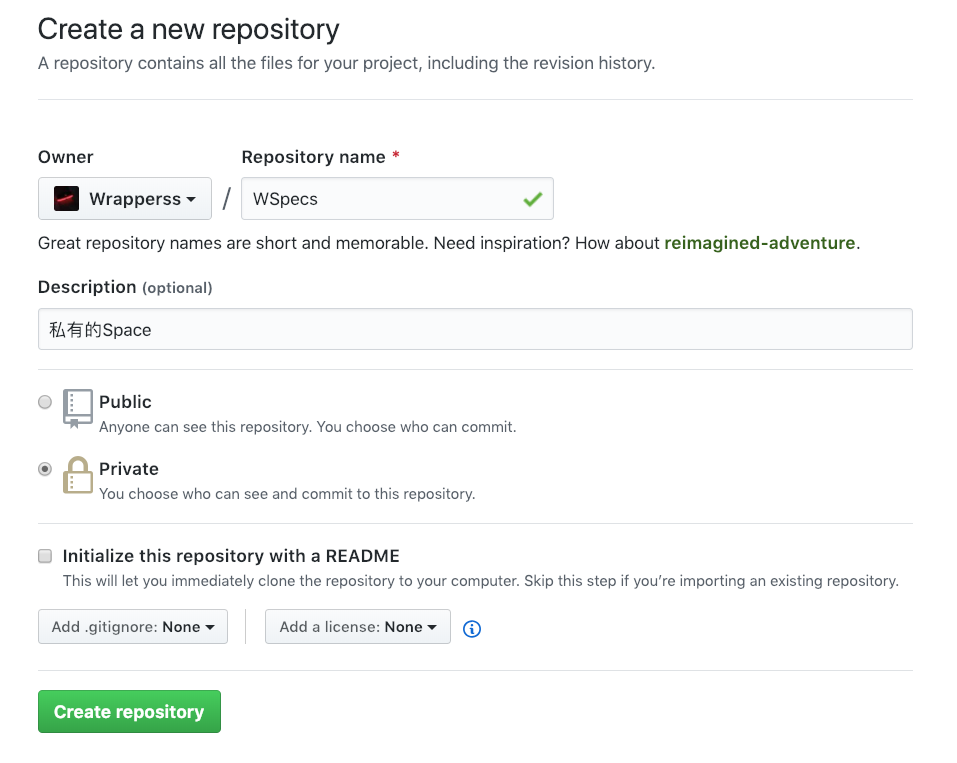

关于组件化，目前比较流行的方案大概有三种：
Router,Protocol,Target-Action。
不论是选择哪一种方案，都需要通过建立私有 Pod 来管理项目。本文希望通过建立一个组件化中常用的Base库能将这个事情讲清楚。
创建 Pod
创建 Base 库的 podspec
选择合适的本地路径创建modularization文件夹
其中的podspec包含了这个库的信息（包括名称，版本和描述等）.
下面是官方定义：
A specification describes a version of Pod library. It includes details about where the source should be fetched from, what files to use, the build settings to apply, and other general metadata such as its name, version, and description.
一个描述各个版本 Pod 库的规范。它包括关于应该从何处获取源码、使用到的文件、应用构建设置以及其他通用元数据(如其名称、版本和描述)的详细信息。
1 | cd Base |
创建时会需要回答几个问题

编辑 podspec
用编辑器打开Base.podspec文件，把我们库的信息填写到podspec中去。
务必每一项都要填写正确，如 s.homepage，s.source 中的链接要能够正常访问1
2
3
4
5
6
7
8
9
10
11
12
13
14
15
16
17
18
19
20
21
22
23
24
25
26
27
28Pod::Spec.new do |s|
s.name = 'Base'
s.version = '0.0.1' # 这里的version要与git操作中的tag相一致，因为目前Base库中还没有代码，故此我把version设为0.0.1
s.summary = 'iOS组件化中Base组件：主要存放项目中无关业务的基础组件'
s.description = <<-DESC
TODO: Add long description of the pod here.
DESC
s.homepage = 'https://github.com/Wrapperss/Base.git'
# s.screenshots = 'www.example.com/screenshots_1', 'www.example.com/screenshots_2'
s.license = { :type => 'MIT', :file => 'LICENSE' }
s.author = { 'Wrappers' => 'zhanglive@outlook.com' }
s.source = { :git => 'https://github.com/Wrapperss/Base.git', :tag => s.version.to_s }
# s.social_media_url = 'https://twitter.com/<TWITTER_USERNAME>'
s.ios.deployment_target = '8.0'
s.source_files = 'Base/Classes/**/*'
# s.resource_bundles = {
# 'Base' => ['Base/Assets/*.png']
# }
# s.public_header_files = 'Pod/Classes/**/*.h'
s.frameworks = 'UIKit', 'MapKit'
s.dependency 'AFNetworking', '~> 2.3' #依赖的其他库
end
测试 podspec 是否正确
1 | cd Base |
创建仓库(Repository)
私有库也需要单独一个Repository来存储我们的代码，就像RxSwfit。
此处用 Github 的私有库为例，一般创建在公司的 GitLab 上。

关联本地与远端，提交代码
通过以下命令将远端仓库与本地代码关联起来
1 | git remote add origin https://github.com/Wrapperss/Base.git |
提交代码，并将打上 Tag
注意：Tag 必须与之前在 podspec 中填写的 version 一致，这里我们是 0.0.1

创建私有的 Spces
创建一个私有的仓库

将私有 Spces 创建到本地
1 | pod repo add WSpecs https://github.com/Wrapperss/WSpecs.git |
查看本地中open ~/.cocoapods/repos
在repos中两个文件夹(Master，WSpces)，其中中 WSpces 就是我们新创建的。
将 Pod 推到到 WSpces
1 | pod repo push WSpecs Base.podspec |
使用
在Podfile中加入1
2
3
4source 'https://github.com/CocoaPods/Specs.git' #公开的
source 'https://github.com/Wrapperss/WSpecs.git' #私有的
pod 'Base', :git=>'https://github.com/Wrapperss/Base.git' #可以使用私有库了！